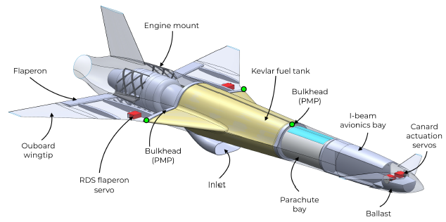
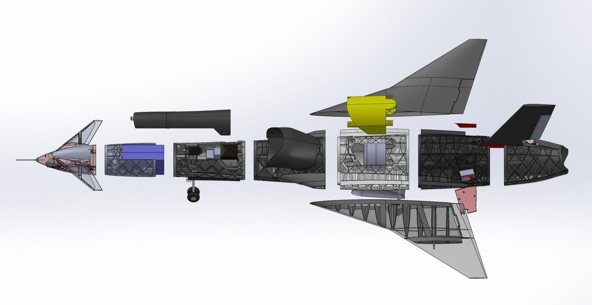
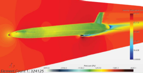
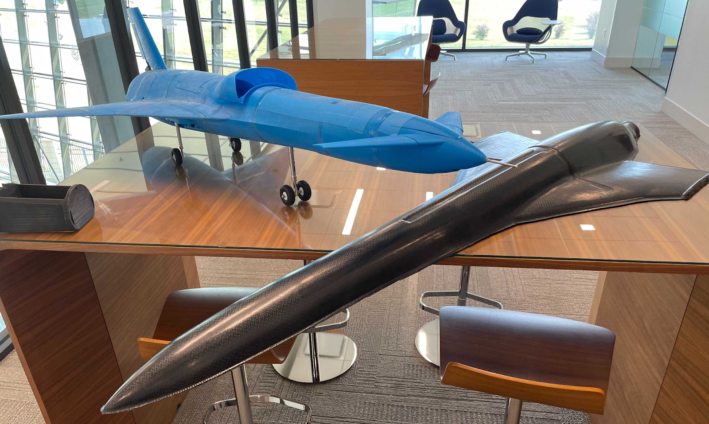
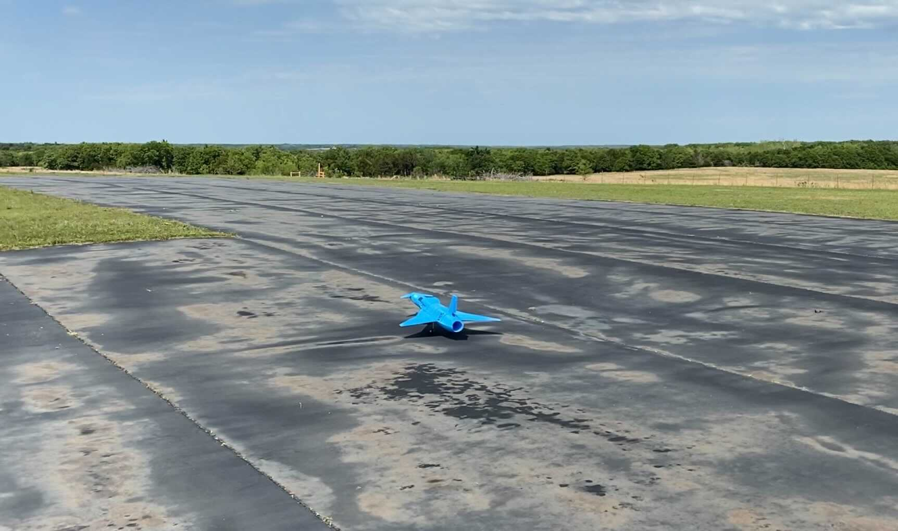

Project Boom is a student-led engineering team with the goal of designing and building the first student UAV to break the sound barrier. The team is composed of graduate and undergraduate students as well as industry advisors spanning twenty countries. Over the past year, we have completed our initial research and design phase, our full-scale 3D printed slow-flight prototype, and are now completing our carbon fiber, high-speed prototype for flight at the Nevada National Security Site.


Project CAD Lead:I designed the aero body which was chosen from four candidates to serve as the initial aero body for the project. I then spearheaded the optimization of the craft’s fuselage based on Star CCM+ CFD, a MATLAB area rule analysis program, and internal volume constraints. I also designed the UAV’s launch platform and rail system. It includes an on-the-fly adjustable angle of attack and modular attachment points for rail mounts and rockets for rocket-assisted takeoff (RATO).

As CAD Lead for the Project, I organized and led further design optimization deliverables and mentored new members in CAD over Zoom conferences. I also co-authored an AIAA white paper on high-speed UAV design entitled: "Proposed Design of a Trans-Sonic Unmanned Aircraft System as a Platform for Understanding Supersonic Flight Design".

